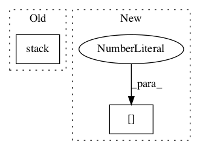

8259acbe363ecc589103678cc7402c2cf54ea564,gpflow/kernels/statics.py,White,K,#White#Any#Any#Any#,25

Before Change
def K(self, X, X2=None, presliced=False):
if X2 is None:
d = tf.fill(tf.stack([tf.shape(X)[0]]), tf.squeeze(self.variance))
return tf.matrix_diag(d)
else:
shape = tf.stack([tf.shape(X)[0], tf.shape(X2)[0]])
After Change
d = tf.fill((X.shape[0], ), tf.squeeze(self.variance))
return tf.linalg.diag(d)
else:
shape = [X.shape[0], X2.shape[0]]
return tf.zeros(shape, dtype=X.dtype)
In pattern: SUPERPATTERN
Frequency: 3
Non-data size: 2
Instances
Project Name: GPflow/GPflow
Commit Name: 8259acbe363ecc589103678cc7402c2cf54ea564
Time:
Author: null
File Name: gpflow/kernels/statics.py
Class Name: White
Method Name: K
Project Name: tensorflow/lattice
Commit Name: 1c75176947730de8322acf6ad996096625e92e3a
Time:
Author: null
File Name: tensorflow_lattice/python/rtl_layer.py
Class Name: RTL
Method Name: call
Project Name: GPflow/GPflow
Commit Name: 8259acbe363ecc589103678cc7402c2cf54ea564
Time:
Author: null
File Name: gpflow/kernels/statics.py
Class Name: Static
Method Name: K_diag